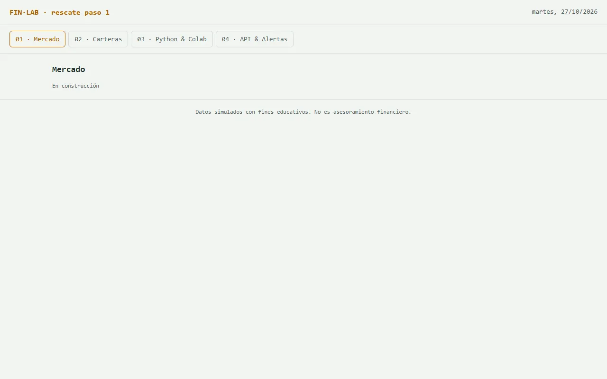

PASO 1 · ESQUELETO
El esqueleto: encabezado y cuatro pestañas
El armazón vacío de la terminal.
Una idea nueva: Todo el taller repite un ciclo: pedir, guardar, abrir, comprobar. Ejemplo: piden el esqueleto, lo guardan como finlab.html, lo abren con doble clic y revisan la lista.
Qué van a lograr
Una página que abre con doble clic y tiene cuatro pestañas, como en la maqueta.
FIN·LAB Grupo 1 · lunes 26/10/2026
En construcción
01 · Mercado02 · Carteras03 · API & Alertas04 · Python & Colab
MercadoEn construcción
Así va quedando
- Esqueleto (este paso)
- Datos (todavía no)
- Mercado (todavía no)
- Indicadores (todavía no)
- Carteras (todavía no)
- API (todavía no)
- Colab (todavía no)
- n8n (todavía no)
- #/guiado (todavía no)
- Clave (todavía no)
- Modelo (todavía no)
- Agente (todavía no)
- Consejo (todavía no)
- MCP (todavía no)

El prompt
PROMPT · PASO 1
Paso 1. Creá el archivo inicial: - un encabezado con el nombre de la terminal y la fecha de hoy - una barra de 4 pestañas: "01 · Mercado", "02 · Carteras", "03 · API & Alertas", "04 · Python & Colab" - al hacer clic en una pestaña se muestra solo su sección, con un título y el texto "En construcción" - un pie con la leyenda "Datos simulados con fines educativos. No es asesoramiento financiero." - que se vea bien en el celular Todavía no agregues datos ni gráficos.
Qué hacer
- Copien el prompt y péguenlo en el chat del paso 0.
- Guarden el código completo (de <!DOCTYPE html> a </html>; si falta el final, se cortó) como finlab.html en la carpeta finlab. Bloc de notas: Tipo → Todos los archivos. Mac: TextEdit → Formato → Convertir a texto sin formato.
- Doble clic en finlab.html y guarden una copia como finlab-v1.html. Siempre se trabaja sobre finlab.html.
Ojo: si queda como finlab.html.txt, no abre. En el Explorador: Ver → Extensiones de nombre de archivo.
Cómo comprobar
- Abre con doble clic y la consola (F12 → Console, el registro de errores) no muestra líneas rojas.
- Las 4 pestañas cambian el contenido y la activa se distingue.
- En ancho de celular (F12 → ícono de celular) no hay barra horizontal.
- El pie dice que los datos son simulados.
Si algo falla
Tres intentos y nada: ⬇ BAJAR LA VERSIÓN DE RESCATE (necesita internet; sin conexión, pídanla al docente)
PROMPT DE RESCATE · PÁGINA EN BLANCO
Para cualquier paso.
Después de tu último cambio la página queda en blanco. La consola del navegador muestra este error: [pegar el error exacto, la línea roja] Te paso el archivo completo. No agregues funciones nuevas: encontrá la causa, explicámela en una línea y devolveme el archivo completo corregido. [pegar el archivo]
- La respuesta se corta: escriban “seguí desde donde te cortaste” y peguen las dos partes.
- La IA cambia lo que no pidieron: recuérdenle “devolveme siempre el archivo completo” y pidan “solo el cambio del paso 1”.